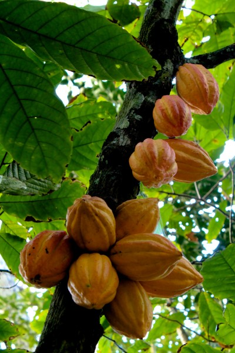

The word “chocolate” entered the English language from Spanish in about 1600. How the word came into Spanish is less certain, and there are competing explanations. Perhaps the most cited explanation is that “chocolate” comes from Nahuatl, the language of the Aztecs, from the word chocolātl, which many sources say derived from xocolātl combining xococ, sour or bitter, and ātl, water or drink. The word “chocolatl” does not occur in central Mexican colonial sources, making this an unlikely derivation. The term “chocolate chip” was first used in 1940. The term “chocolatier”, for a chocolate confection maker, was attested from 1888.
Chocolate has been prepared as a drink for nearly all of its history. For example, one vessel found at an Olmec archaeological site on the Gulf Coast of Veracruz, Mexico, dates chocolate's preparation by pre-Olmec peoples as early as 1750 BCE. On the Pacific coast of Chiapas, Mexico, a Mokaya archaeological site provides evidence of cacao beverages dating even earlier, to 1900 BCE. The residues and the kind of vessel in which they were found indicate the initial use of cacao was not simply as a beverage, but the white pulp around the cacao beans was likely used as a source of fermentable sugars for an alcoholic drink. By the 15th century, the Aztecs gained control of a large part of Mesoamerica and adopted cacao into their culture. They associated chocolate with Quetzalcoatl, who, according to one legend, was cast away by the other gods for sharing chocolate with humans, and identified its extrication from the pod with the removal of the human heart in sacrifice.
Until the 16th century, no European had ever heard of the popular drink from the Central and South American peoples. Christopher Columbus and his son Ferdinand encountered the cacao bean on Columbus's fourth mission to the Americas on 15 August 1502, when he and his crew seized a large native canoe that proved to contain cacao beans among other goods for trade. Spanish conquistador Hernán Cortés may have been the first European to encounter it, as the frothy drink was part of the after-dinner routine of Montezuma. In 1815, Dutch chemist Coenraad van Houten introduced alkaline salts to chocolate, which reduced its bitterness. A few years thereafter, in 1828, he created a press to remove about half the natural fat (cocoa butter or cacao butter) from chocolate liquor, which made chocolate both cheaper to produce and more consistent in quality. This innovation introduced the modern era of chocolate. Known as “Dutch cocoa”, this machine-pressed chocolate was instrumental in the transformation of chocolate to its solid form when, in 1847, Joseph Fry learned to make chocolate moldable by adding back melted cacao butter. Milk had sometimes been used as an addition to chocolate beverages since the mid-17th century, but in 1875 Daniel Peter invented milk chocolate by mixing powdered milk developed by Henri Nestlé with the liquor.

There are several types of chocolate:
Pure, unsweetened chocolate, often called “baking chocolate”, contains primarily cocoa solids and cocoa butter in varying proportions. Much of the chocolate consumed today is in the form of sweet chocolate, which combines chocolate with sugar. Milk chocolate is sweet chocolate that also contains milk powder or condensed milk. In the U.K. and Ireland, milk chocolate must contain a minimum of 20% total dry cocoa solids; in the rest of the European Union, the minimum is 25%. “White chocolate” contains cocoa butter, sugar, and milk, but no cocoa solids. Dark chocolate has been promoted for unproven health benefits. Dark chocolate is produced by adding fat and sugar to the cacao mixture. The U.S. Food and Drug Administration calls this “sweet chocolate”, and requires a 15% concentration of chocolate liquor. European rules specify a minimum of 35% cocoa solids. Semisweet chocolate is a dark chocolate with a low sugar content. Bittersweet chocolate is chocolate liquor to which some sugar, more cocoa butter, vanilla, and sometimes lecithin have been added. It has less sugar and more liquor than semisweet chocolate, but the two are interchangeable in baking. White chocolate, although similar in texture to that of milk and dark chocolate, does not contain any cocoa solids. Because of this, many countries do not consider white chocolate as chocolate at all. Because it does not contain any cocoa solids, white chocolate does not contain any theobromine, so it can be consumed by animals. Unsweetened chocolate is pure chocolate liquor, also known as bitter or baking chocolate. It is unadulterated chocolate: the pure, ground, roasted chocolate beans impart a strong, deep chocolate flavor. It is typically used in baking or other products to which sugar and other ingredients are added. Raw chocolate, often referred to as raw cacao, is always dark and a minimum of 75% cacao.


Cacao pods are harvested by cutting them from the tree using a machete, or by knocking them off the tree using a stick. The beans with their surrounding pulp are removed from the pods and placed in piles or bins, allowing access to micro-organisms so fermentation of the pectin-containing material can begin. Yeasts produce ethanol, lactic acid bacteria produce lactic acid, and acetic acid bacteria produce acetic acid. The fermentation process, which takes up to seven days, also produces several flavor precursors, eventually resulting in the familiar chocolate taste. It is important to harvest the pods when they are fully ripe, because if the pod is unripe, the beans will have a low cocoa butter content, or sugars in the white pulp will be insufficient for fermentation, resulting in a weak flavor. After fermentation, the beans must be quickly dried to prevent mold growth. Climate and weather permitting, this is done by spreading the beans out in the sun from five to seven days. The dried beans are then transported to a chocolate manufacturing facility. The beans are cleaned (removing twigs, stones, and other debris), roasted, and graded. Next, the shell of each bean is removed to extract the nib. The nibs then grounded and liquefied, resulting in pure chocolate in fluid form: chocolate liquor. The liquor can be further processed into two components: cocoa solids and cocoa butter.
Chocolate liquor is blended with the cocoa butter in varying quantities to make different types of chocolate or couvertures. Usually, an emulsifying agent, such as soy lecithin, is added, though a few manufacturers prefer to exclude this ingredient for purity reasons and to remain GMO-free, sometimes at the cost of a perfectly smooth texture. Some manufacturers are now using PGPR, an artificial emulsifier derived from castor oil that allows them to reduce the amount of cocoa butter while maintaining the same mouthfeel. The texture is also heavily influenced by processing. The more expensive chocolate tends to be processed longer and thus have a smoother texture and mouthfeel, regardless of whether emulsifying agents are added.
The final process is called tempering. Uncontrolled crystallization of cocoa butter typically results in crystals of varying size, some or all large enough to be clearly seen with the naked eye. This causes the surface of the chocolate to appear mottled and matte, and causes the chocolate to crumble rather than snap when broken. The uniform sheen and crisp bite of properly processed chocolate are the result of consistently small cocoa butter crystals produced by the tempering process.
Mesoamerican Pic: Chocolate. Retrieved September 18, 2016, from https://en.wikipedia.org/wiki/Chocolate.
Mesoamerican Pic: History of chocolate. Retrieved September 19, 2016, from https://en.wikipedia.org/wiki/History_of_chocolate.
Cocoa Tree Pic: Chocolate. Retrieved September 20, 2016, from http://www.ancient.eu/Chocolate/.
Cocoa Bean Pic: Why Should You Use Cocoa Butter? It's UhMaaaZing. Retrieved September 20, 2016, from https://www.pinterest.com/pin/444871269418435580/.
The History of Chocolate: Europe. Retrieved September 20, 2016, from http://www.godivachocolates.co.uk/the-history-of-chocolate-europe.html.
Silver Chocolate Pot. Retrieved September 21, 2016, from https://en.wikipedia.org/wiki/Chocolate#European_adaptation.
Coenradd Van Houten. Retrieved September 22, 2016, from http://exhibits.mannlib.cornell.edu/chocolate/houten.php.
Comparison of Cocoa: Natural Cocoa vs. Dutch Process Cocoa Powder - Handle the Heat. Retrieved September 22, 2016, from http://www.handletheheat.com/natural-cocoa-vs-dutch-process-cocoa-powder/.
Variety Pic: Holy Cacao! Making Chocolate with Your Child. Retrieved September 14, 2016, from http://www.botanicgardens.org/blog/holy-cacao-making-chocolate-your-child.
Dark Chocolate Pic: Chocolate Shop - Chocolate Bars. Retrieved September 14, 2016, from https://www.annasheachocolates.com/chocolate-bars.php.
Milk Chocolate Pic: Chocolate Shop - Chocolate Bars. Retrieved September 14, 2016, from https://www.annasheachocolates.com/chocolate-bars.php.
White Chocolate Pic: Chocolate Bars. Retrieved September 14, 2016, from http://chocolat.bz/choc-bars.
Bittersweet Chocolate Pic: About Bittersweet chocolate. Retrieved September 15, 2016, from http://www.feelthechoco.com/project/about-bittersweet-chocolate/.
Variety Pic: Can Cats Eat Chocolate? - CatLoveHub. Retrieved September 15, 2016, from http://catlovehub.com/can-cats-eat-chocolate/.
Cookie Dough Gif: The Huffington Post GIF - Find & Share on GIPHY. Retrieved September 21, 2016, from https://giphy.com/gifs/is-reasons-superior-14mTI5MQbroFIA .
Cookie Gif: The Huffington Post GIF - Find & Share on GIPHY. Retrieved September 21, 2016, from https://giphy.com/gifs/is-reasons-superior-S3HBZs20Up1UQ.
The entire contents of this page have been lifted from Wikipedia's page on chocolate.
To learn a little more about chocolate, go to my other page on chocolate.
Return to the top of the page.